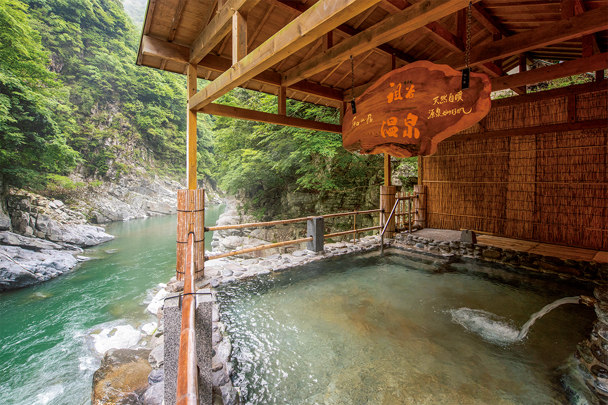
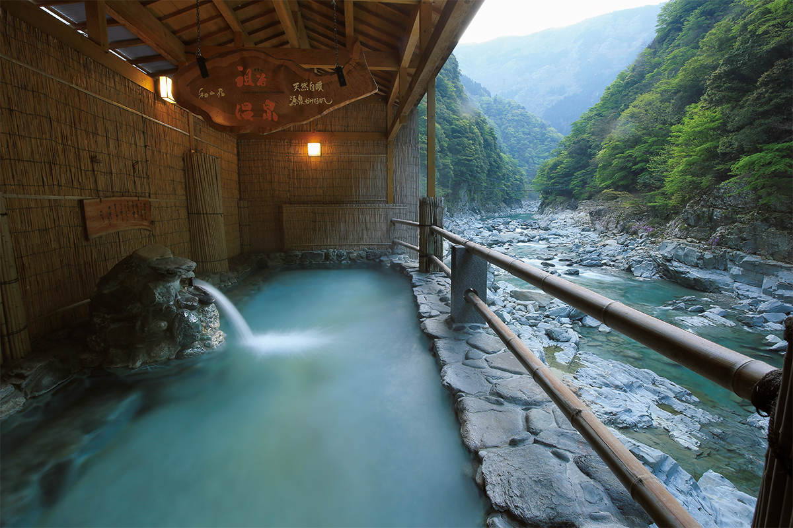
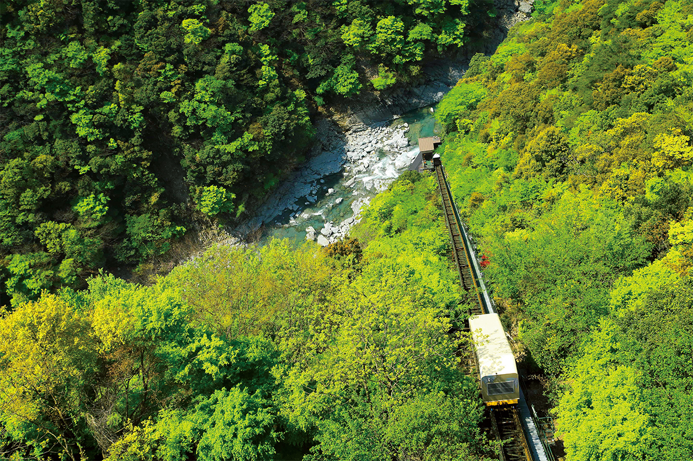
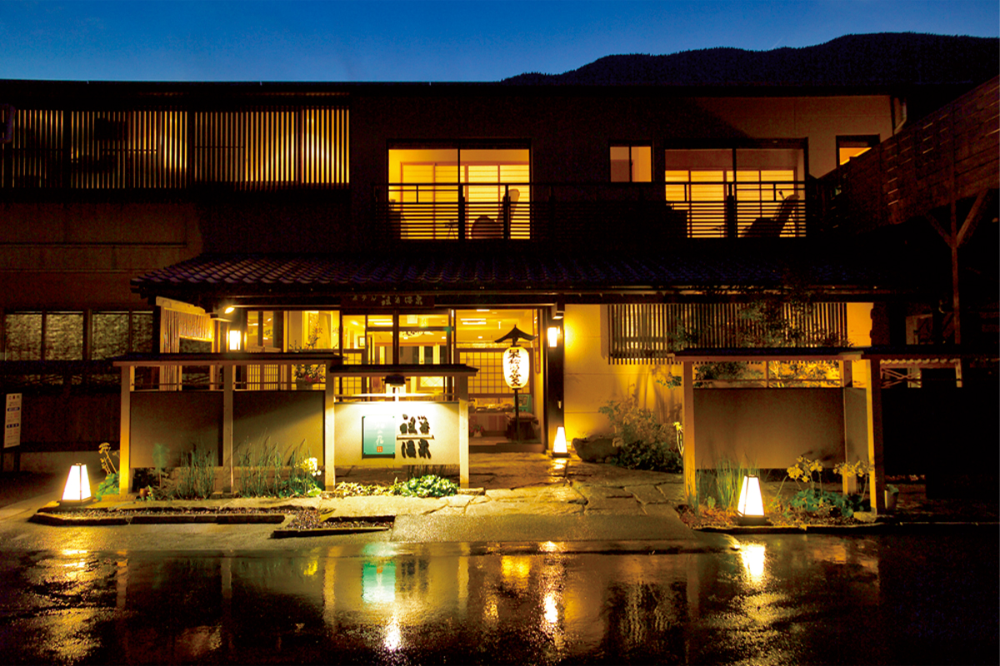
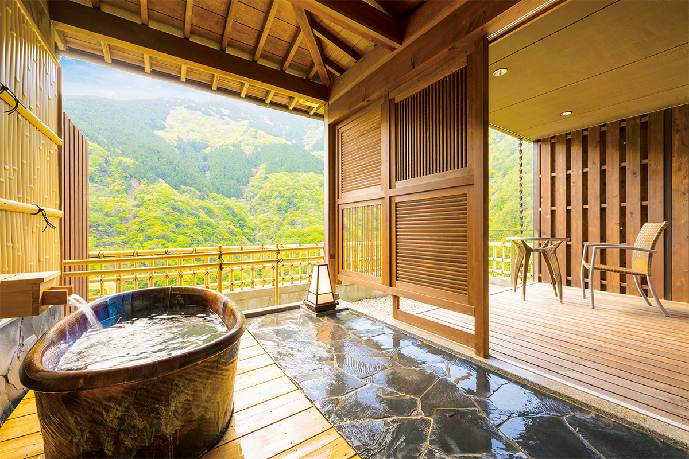

Префектура Токусима · долина Ия · онсэн
Отель «Ия-онсэн»: купальня на дне ущелья и шёлковая вода источника

В долине Ия на западе префектуры Токусима отель стоит на краю ущелья, а его открытая купальня лежит на самом дне. Спуститься к воде можно только на канатной дороге, которую построил сам отель.
Онсэн
Шёлковая вода на дне ущелья
Отель «Ия-онсэн» выбрала исследовательница онсэнов, которая отбирала лучшие источники страны. Опускаешься в купальню, и вода мягко обволакивает тело. Задержишься по шею, и кожу покрывают мельчайшие пузырьки. Тронешь их, а они тают, как первый снег. Такого ощущения не даёт больше ни один источник.

Температура источника 38,3 °C, родник бьёт у края купальни. Вода щелочная, простая серная, без подогрева и разбавления, льётся без остановки. В прозрачной воде танцуют хлопья минералов, в воздухе едва уловим запах серы.
Открытая купальня спрятана в долине Ия, которую причисляют к трём самым труднодоступным уголкам Японии. Рядом шумят ущелья Обокэ и Кобокэ, их пробила река Ёсино. К воде ведёт собственная канатная дорога отеля: вагончик пять минут спускается по склону крутизной 42 градуса, перепад высот 170 метров. Из воды видны пласты сланца с галькой, круто встающие над рекой; этот обрыв объявлен природным памятником префектуры. Серные соединения разгоняют кровь, и тело наполняется теплом.

Сам отель стоит наверху, над ущельем, и в этой глухой стороне удивляет современным обликом. Большая общая купальня устроена как «бесконечный» бассейн под открытым небом: по утрам из воды видно, как по ущелью стелется облако.

Есть здесь и номера с собственными открытыми купальнями, откуда открывается вид, будто паришь в воздухе.

К ужину подают сасими из речной форели амаго, гречневую лапшу соба из Ии почти без связующих добавок, говядину «Ава» и курицу «Аваодори». Местные блюда хороши и с местным сакэ, и с вином.
Отель «Ия-онсэн»
- Адрес
- префектура Токусима, город Миёси, Икэда, Мацуо, Мацумото, 367-28
- Телефон
- +81 883-75-2311
- Часы работы (дневное купание)
- 7:30–17:00 (последний вход в 16:00)
- Выходные
- среда (если приходится на праздник, переносится на другой день)
- Цены
- от 19 590 иен за ночь с ужином и завтраком (с налогом и обслуживанием); дневное купание в панорамной купальне 700 иен для взрослого и 300 иен для ребёнка
- Заезд
- 15:00, выезд: 11:00
- Как добраться
- на машине около 55 минут от развязки Икава-Икэда скоростной дороги Токусима; на поезде около 35 минут на автобусе от станции Обокэ, от остановки «Ия-онсэн» пешком. Отель возит гостей от станции Обокэ один раз в день, по брони
- Сайт
- iyaonsen.co.jp